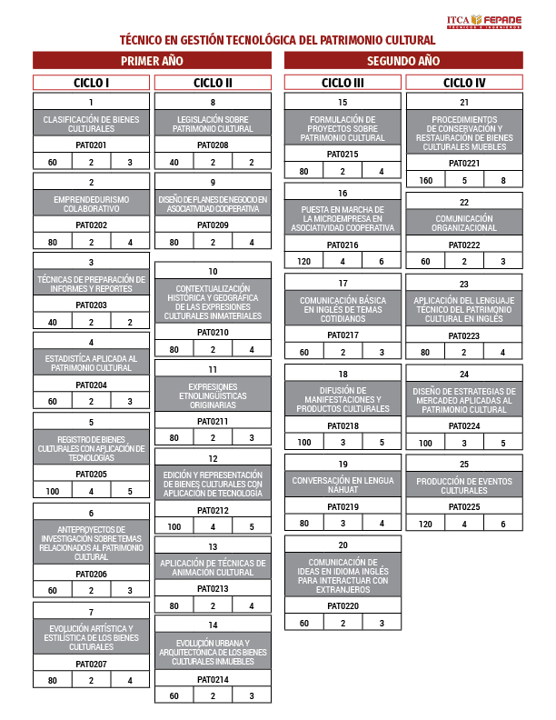
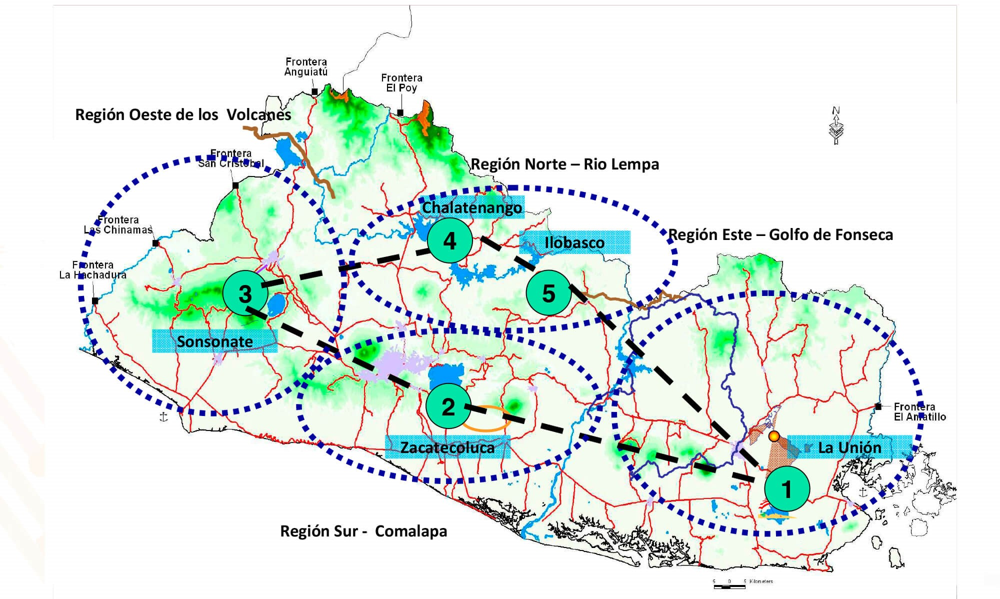
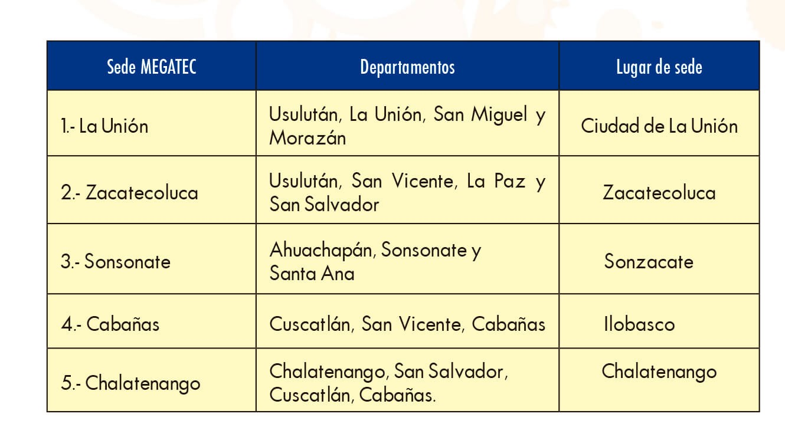

El Alcance del proyecto en el marco del Plan Cuscatlán y de los Fundamentos de la Educación Media Técnica y Superior Tecnológica, es el otorgamiento de becas y estipendios MINEDUCYT, beneficiando principalmente a estudiantes de escasos recursos evaluados por el socio estratégico para su formación académica.
a). La estrategia de asignación de becas, será priorizando a los estudiantes de escasos recursos que no puedan costearse sus estudio técnicos de nivel superior e ingeniería, de conformidad al análisis y estudio socioeconómico de cada estudiante cuyo ingreso familiar per cápita no exceda el valor promedio equivalente al salarios mininos del sector comercio y servicio vigente, y en cumplimiento a los requisitos estipulaos eh la normativa para el otorgamiento de Becas y estipendios MINEDUCYT para educación técnica autorizada.
b). Estipendio: comprende la asignación de fondos destinados a la Escuela Especializada en Ingeniería ITCA FEPADE Regional La Unión, para que entregue a los estudiantes seleccionados, de conformidad a l presupuesto establecido, aplicando la Normativa para el otorgamiento de Becas y Estipendios MINEDUCYT autorizada, un tiempo de alimentación, conectividad y el valor determinado para el pago de transporte.
El tiempo de comida será entregado de los alimentos elaborados por el socio estratégico del proyecto o mediante deposito semana en los casos que aplique. En caso contrario, serán adquiridos mediante el cumplimiento de las regulaciones que corresponden.
El estipendio de conectividad será depositado semanalmente a los estudiantes con el propósito de que puedan continuar con su proceso de formación a través de plataformas virtuales, otorgándoles una asignación diaria de Uno 25/100 Dólares de los Estados Unidos de América (US $ 1.25) para que puedan contratar de manera personal con su proveedor de telefonía paquetes de internet de acuerdo al monto máximo otorgado.
El valor asignado diario por estudiante, no excederá la cuota máxima de Cinco 00/100Dolares de los Estados Unidos de América (US $5.00), distribuidos de la siguiente manera: para transporte hasta Dos 00/100 Dólares de los Estados Unidos de América (US $2.00) y alimentación la suma de Uno 75/100 Dólares de los Estados Unidos de América (US $1.75) y conectividad la suma de Uno 25/100 Dólares de los Estados Unidos de América (US $ 1.25).
A partir de mediados del año 2005 el MINED inició la implementación del Plan Nacional de Educación 2021, el cual en uno de sus objetivos determina la necesidad de “Formación Técnica y Tecnológica del más alto nivel” de acuerdo con las necesidades productivas de los polos de desarrollo del país.
En ese año, se inició la construcción y equipamiento del Instituto Tecnológico de La Unión, el cual a partir del 2006, inició sus labores con 4 nuevas carreras: Técnico en Logística y Aduanas, Técnico en Hostelería y Turismo, Técnico en Administración y Operación Portuaria y Técnico en Sistemas Informáticos, con una duración de dos años. Estas carreras fueron diseñadas con un enfoque por competencias, aprovechándose la experiencia de APREMAT y en consulta con el sector productivo, sin que existiera articulación con el Nivel Medio.
El programa MEGATEC será extendido a otras carreras dentro del nodo MEGATEC La Unión. De igual manera, se espera que en los próximos años las sedes de Cabañas, La Paz, Chalatenango y Sonsonate inicien su acción formativa, articulando la Educación Media Técnica y la Educación Superior.
6. Iniciativas privadas.
En el mismo contexto durante el año 2005, la Institución Salesiana de El Salvador implementó un programa de articulación de programas de estudio denominado Proyecto de Integración Lineal de estudios Técnicos (PILET), el cual beneficiará a estudiantes de los colegios salesianos a través de un currículo continuo que integre sistemáticamente los niveles de Educación Media Técnica y Educación Superior.
El programa inicia en el bachillerato, donde el estudiante desarrolla los programas del Bachillerato General y simultáneamente los programas del Bachillerato Técnico Vocacional. En el tercer año del Bachillerato Técnico Vocacional se estudian los contenidos del primer año del Técnico Superior de la misma especialidad. Al finalizar el programa de Técnico Superior el estudiante obtendrá las primeras asignaturas de los programas de estudios de la ingeniería de la Universidad Don Bosco. De manera que con la obtención del título de Técnico Superior, el estudiante ingresa continuamente al tercer año de la carrera de Ingeniería de la Universidad Don Bosco.
La implementación del PILET fue autorizada por el Ministerio de Educación para iniciar en 2006 en el Instituto Ricaldone con las especialidades de Electrónica e Informática, para 2008. Después de la buena experiencia obtenida, el Institución Salesiana de El Salvador ha solicitado al Ministerio de Educación la ampliación del PILET al colegio Don Bosco en la especialidad de Informática.
DESCRIPCIÓN DEL PROGRAMA MEGATEC
MEGATEC es una alternativa educativa moderna, que aprovecha y potencia la Educación Técnica y Tecnológica del Nivel Medio y Superior para formar el capital humano en las distintas zonas del país, dinamizando el desarrollo productivo regional, con base a las inclinaciones vocacionales del educando.
El Modelo Educativo Gradual de Aprendizaje Técnico y Tecnológico (MEGATEC) se fundamenta en los fines de la Educación Nacional, objetivos de la Educación Técnica Tecnológica del Nivel Medio y Superior, y de la Formación Profesional; así como en los objetivos del Plan Nacional de Educación 2021.
La finalidad del presente documento es brindar los lineamientos para la operativización del programa MEGATEC, sustentado en el Plan Nacional de Educación 2021, en la línea estratégica número 3: “Competitividad”, mediante el desarrollo de la política de especialización técnica y tecnológica.
Figura 1: Red de centros educativos MEGATEC

MEGATEC se concibe como un proceso de reforma curricular de la Educación Técnica y Tecnológica del Nivel Medio y Superior orientada a la calidad, la excelencia, la continuidad y flexibilidad curricular, para adecuarse a las exigencias del sector productivo y al desarrollo social del país.
El programa MEGATEC ha iniciado con carreras articuladas de acuerdo a la siguiente distribución:

Cada una de las sedes MEGATEC tiene adscritos una serie de Institutos Nacionales cuidadosamente seleccionados por el Ministerio de Educación dentro de la zona de influencia geográfica de la sede MEGATEC que constituyen la Red de Centros Educativos MEGATEC. Dentro de esta Red se han escogido hasta la fecha, 4 Institutos en el caso de La Unión, 3 para Cabañas y 3 en el caso de Zacatecoluca, para articularse directamente con la sede MEGATEC impartiendo una carrera técnica desde el bachillerato.